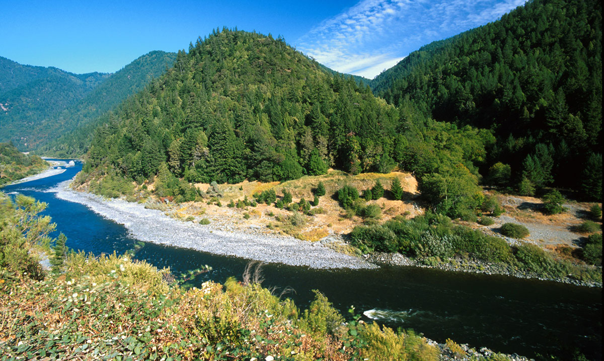

Have An Adventure
Make a reservation and visit Klamath River
Why Klamath?
This is an easier river than the South Fork American, but in a more secluded setting. With a few inflatable kayaks, there can be more than enough excitement for older children or more experienced river runners. Its location provides a great remote and “get-a-way from it all” river trip.
The Story of Klamath
The designated California segment of the Klamath River begins 3,600 feet below Iron Gate Dam and ends at the Pacific Ocean; the designation includes its principal tributaries-the Scott River, Salmon River and Wooley Creek. Klamath tributaries flow from Mount Shasta, Marble Mountain and the Siskiyou and Trinity Alps Wilderness Areas. The U.S. Forest Service and Bureau of Land Management manage the upper 127 miles of the Klamath, and the state of California, with support from the National Park Service and Native American tribes, manage the remainder. Tributaries are administered by the U.S. Forest Service, except one short segment of the Scott. The Klamath River is well-known for its beautiful scenery, and paddlers are attracted to its Class II to Class V rapids. The river is also an important wildlife habitat corridor, known for its raptors.
Enjoy the Klamath River
More than Just The Thrill
Enjoy the breathtaking scenery. From valleys, meadows, canyons, and high peaks; it's way more than just the rapids. It's a great way to get away from it all and relax amongst all the beauty of the great outdoors.
Join UsDry Oar © 2022 - Johan Villarreal.


Johan Villarreal - WDD 130